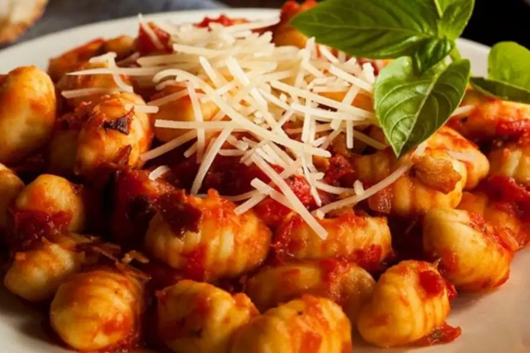
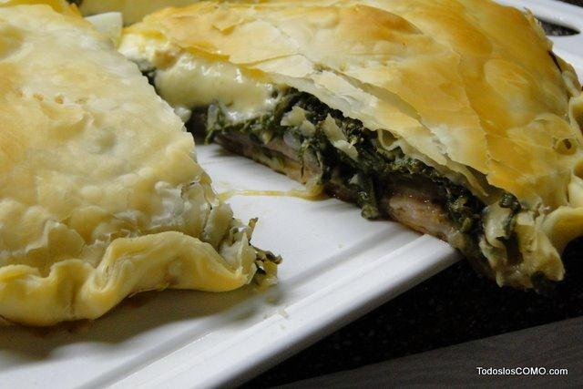
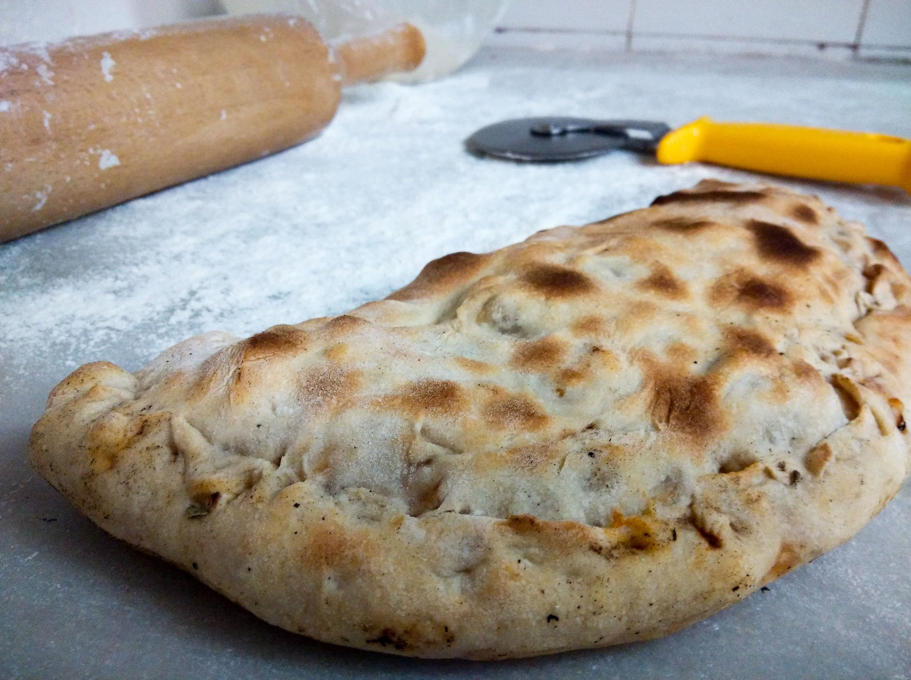

Mis Comidas Favoritas.
ComidaFav
Origen de la comida
Imagen de la comida
Ñoquis con salsa filetto
Italia

Tarta de Verdura
Italia

Wok de vegetales
Origen Asiatico
Calzone vegetale
Italia (Napoli)
